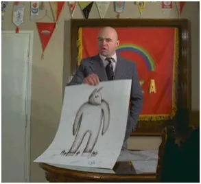
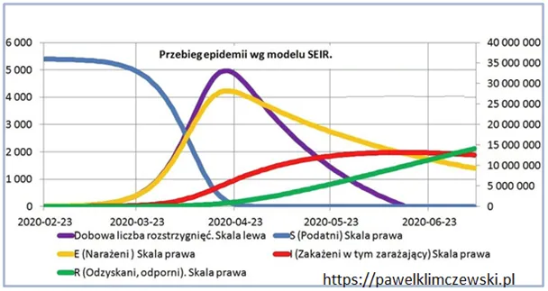

Nie było takich badań i co Pan/Pani mi zrobi?
Dziś, gdy mamy potwierdzenie producenta szczepionki, że nie było wiadomo, czy preparat podany masowo, spowolni transmisje, przypominam sobie moją tezę po przeczytaniu ulotki o działaniu preparatu. Było tam napisane tylko, że może on spowodować osłabienie objawów przechodzonej infekcji.

Epidemiologia to kombinacja medycyny i matematyki i od dawna wiadomo, jak przebiega fala zakażeń. Jest też jasne, że kontakt z wirusem będą mieli wszyscy, zostaje tylko kwestia "kiedy". Na grafie mamy schemat przebiegu zakażeń z 2020 w Polsce. Wygląda na skomplikowany, ale skupmy się tylko na liniach błękitnej i fioletowej.

Błękitna to ludzie przed zakażeniem/zarażeniem, na początku rozwoju nowej mutacji wszyscy, czyli ok. 35 mln. Jak widać takich ludzi ubywa szybko, pod koniec wiosny teoretycznie już ich nie było. Po kontakcie z wirusem może wystąpić kilka scenariuszy, jednym z nich jest ciężka choroba. W szczycie mieliśmy to na linii fioletowej w ilości ok. 5000 krytycznych stanów na dobę. Umierało wtedy na dobę kilka osób, co oznaczało śmiertelność wyrażoną w promilach, jak co roku przy infekcjach sezonowych.
Wróćmy do narracji z tamtego okresu: "Wypłaszczamy krzywą!" Chodziło o to, aby ta fioletowa krzywa nie wystrzeliła za wysoko, bo zabraknie wtedy miejsc w szpitalach dla chorych najciężej i powtórki tej akcji co pół roku przez dwa lata. Mija rok, mamy już szczepionkę, o której wiadomo jedynie, że: może ona spowodować osłabienie objawów przechodzonej infekcji. Napisałem wtedy że, skutek może być odwrotny od zamierzonego, bo ludzie, którzy infekcję przechodzą lekko, bez gorączki itp. nie będą stronić przed kontaktami z innymi jakby to robili mając gorączkę i inne objawy. Post pewnie został zablokowany itp. ale warto używać logiki, nawet po szkodzie. Być może moja teza wyjaśnia te tajemnicze korelacje, że w podziale na województwa im więcej szczepiono, tym więcej " osób chorowało ". Nie wchodźmy do tej samej rzeki ponownie, pamiętajmy tylko, że w głównym nurcie tej "medialnej rzeki" prawdy nie było i nie ma dziś.
Paweł Klimczewski